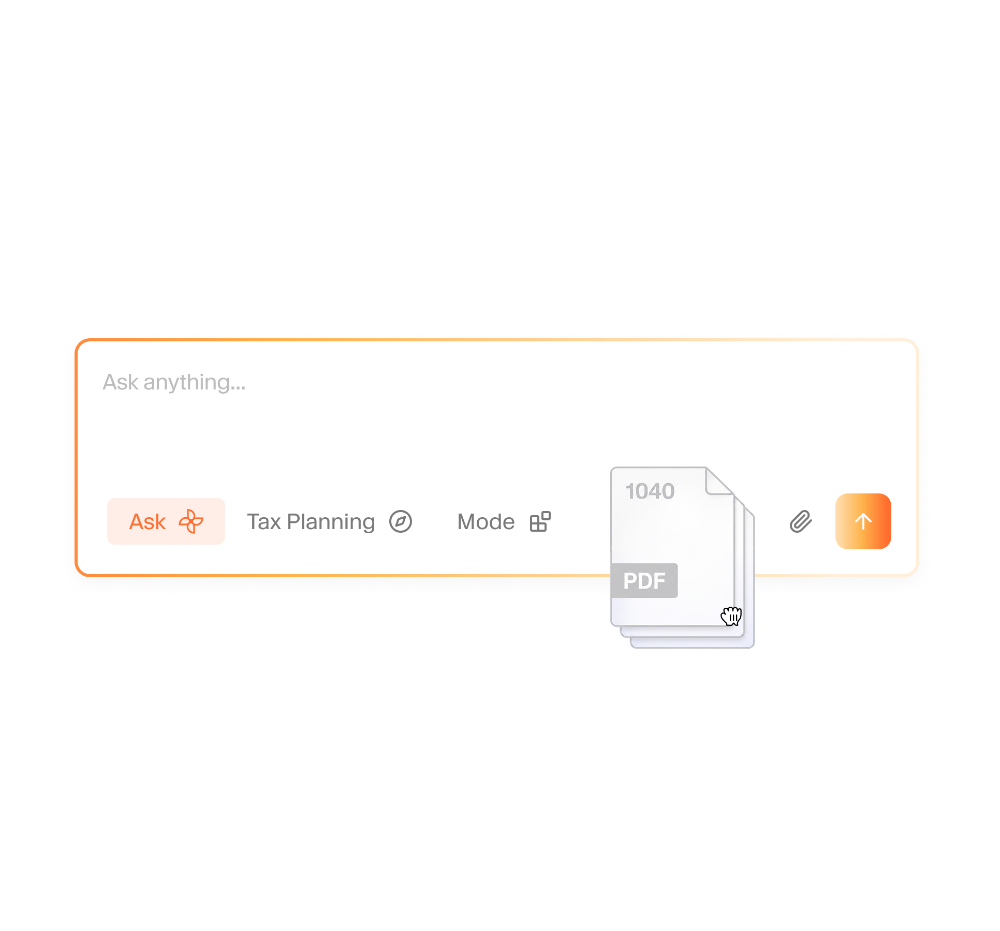
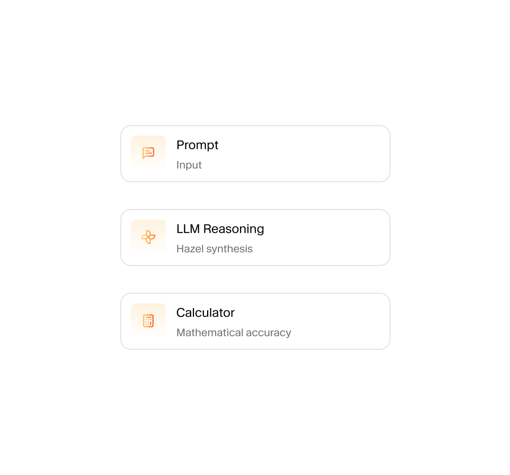
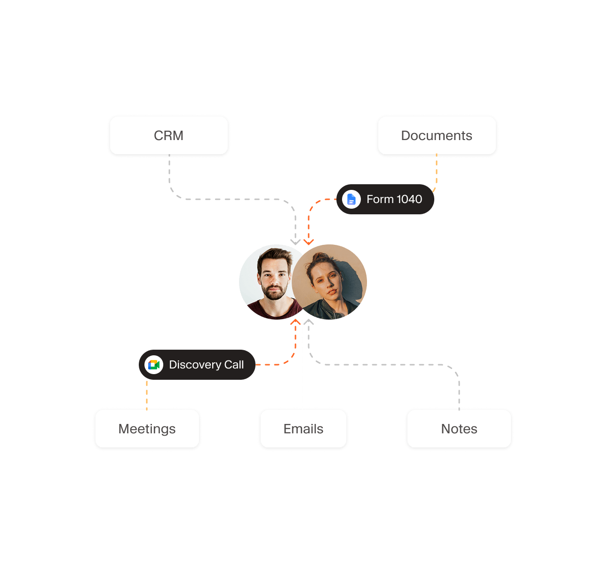

第一步不是规划，而是“记住”
Hazel 2025 年先以会议、邮件、CRM、文档与日程整合切入，形成持续更新的客户上下文层。没有这层，后续 agent 只是一次性问答。EV-010
从第一个“税务规划智能体”到第二个“金融规划智能体”：Altruist 如何把顾问的客户上下文、确定性计算与人类责任边界拼成一条产品与商业飞轮。
Hazel 2025 年先以会议、邮件、CRM、文档与日程整合切入，形成持续更新的客户上下文层。没有这层，后续 agent 只是一次性问答。EV-010
输入高度文档化、机会可量化、结果可做情景比较、顾问价值容易被客户看见；官方定价也从基础版 $60 抬升到 $160。EV-004 EV-005
第二个 agent 跨越退休、投资、现金流、遗产、税务、保险，开始统一公司假设、顾问流程和客户呈现，定价升至 $300。EV-003 EV-005
明确是 2026-02-10 发布的 Tax Planning Agent；2025 年的 Hazel 基础平台是底座，不计入这组“expanded planning solutions”的第一项。EV-002
金融规划 agent 在 Vanguard 公布收购协议后 6 个自然日发布。可以称“并购公告后一周内”，但严格说不是同一自然周。EV-001 EV-012
确定性计算降低算术漂移，但文档抽取错误、数据过期、错误假设、工具选择错误仍会传导到结果，所以还需要来源、置信度、方法和假设清单。EV-006 EV-009
零数据保留针对 AI 模型提供商/子处理商；Hazel 自身可按客户配置保留会议媒体、转写和摘要。营销口径与法律条款必须合并理解。EV-006 EV-008
不要求使用 Altruist 托管，让 Hazel 成为低迁移成本入口；一旦连接更多托管数据，体验更深，形成从 SaaS 到托管的潜在转化飞轮。后半句为基于产品结构的推断。推断
官方理由强调顾问关系、技术平台、人才和更低服务成本；Altruist 将在交割后保持独立运营。$4.6B 是媒体报道，不是官方披露。EV-012 EV-013 EV-014
$152M 融资，投后估值约 $1.9B。资金叙事已明确是垂直一体化托管技术与 AI。EV-015
把专为顾问设计的会前准备、实时记录、会后跟进能力收入体系，并宣布改造成独立 Hazel。EV-011
Ask Hazel、每日摘要、邮件草拟、任务同步、会议记录与 CRM 集成；$60/席位/月，面向所有顾问，不要求托管。EV-010
读取 1040、W-2、工资单、1099、账户与客户沟通，生成机会、情景模拟和客户报告。EV-002 EV-004
强调顾问供给不足、Altruist 的工作流与关系资产；交割后保持品牌、管理层和独立运营模式。EV-012 EV-013
将税务规划扩展为六大工作流，并把“数字由专用程序计算”作为可信度核心卖点。EV-001
| 维度 | 第一个：税务规划智能体 | 第二个：金融规划智能体 |
|---|---|---|
| 发布日期 | 2026-02-10 EV-002 | 2026-09-01 EV-001 |
| 任务边界 | 税务机会识别、跨年度税务策略、Roth conversion、资本利得管理、情景比较 | 退休、投资优化、现金流、遗产、税务、保险与风险六大工作流 |
| 关键输入 | 1040、W-2、1099、工资单、账户报表、会议/邮件、CRM、托管数据 | 金融文件 + 会议/沟通 + 笔记 + CRM、邮箱、托管与其他连接数据 |
| 交互方式 | 选择/追问税务场景，实时改假设，比较税负与节税机会 | 设定公司资本市场与通胀假设；按客户目标生成计划，现场调整储蓄、投资、支出与提取方案 |
| 输出 | 税务机会、跨年模型、税务信、交互式客户报告、顾问谈话要点 | 完整计划、交互图表、来源/置信度/方法/假设、会议跟进与沟通草稿 |
| 可量化价值 | 官方自报：20+ 小时/月、平均为客户节税 $5,900；来自用户调查与产品数据，不是独立实验。EV-004 | 官方称把原需 10+ 小时的计划压缩至分钟级；基线来自 Kitces 研究，个体结果会不同。EV-003 |
| 定价 | $160 / 席位 / 月，含基础 Hazel 平台 | $300 / 席位 / 月，包含税务规划 agent |
| 为什么先做 | 文档标准、价值可测、客户感知强、容易形成高价升级包 | 在证明信任和付费后，把同一上下文层与工具编排扩展到整套规划 |
| 主要风险 | 税法更新、边缘案例、输入抽取、税务建议边界 | 跨域假设冲突、模型链路更长、错误传播与受托责任更复杂 |

Altruist 公开描述 Sol 作为中心编排器：先理解请求与客户上下文，再将子任务委派给内置财务计算程序，最后聚合结果。计算路径可重复，模型主要承担语义理解、任务分解与解释。EV-009
但“确定性”不等于“必然正确”：同样的错误输入和错误假设会稳定地产生错误结果。Hazel 因此又增加了数据来源、置信度、方法与假设清单。EV-006

跨邮件、文档、会议、CRM 与托管数据组织上下文。
把目标拆成子任务，并调用专用计算程序。
生成计划、图表与沟通材料，支持实时改假设。
公开材料没有证明它会自主交易或直接替顾问做受托决定；输出需顾问审核。
官方新闻稿写明：AI 收集和理解数据，专用程序执行财务计算，“每一个数字都是计算出来的”。EV-001
边界：不能覆盖数据抽取、假设选择、规则版本和工具路由错误。
OpenAI、Anthropic 等关键子处理商按信任中心执行零保留；AWS 基础设施则标为可应要求删除。EV-007
边界：不是 Hazel 自身完全不存数据；客户可配置会议数据的保留与删除。
产品页声明输出仅供信息使用，不构成金融、税务、投资、法律或合规建议；顾问承担审查与受托责任。EV-003 EV-008
边界：免责声明不能代替真实的审批、记录、适当性与监督流程。

席位 / 月
会议、邮件、任务、CRM、文档与客户知识库。
席位 / 月
含基础平台；把税务价值变成可量化的客户对话与报告。
席位 / 月
含税务 agent；承接完整规划与公司方法论。
定价为 2026-09-28 官网标价，不含企业折扣；均提供 14 天试用。EV-005
Standalone 降低试用门槛，先接入 CRM/邮件/外部托管数据；顾问在 Hazel 内形成客户知识与工作流依赖后，Altruist 自有托管数据会提供更实时、更深的体验。这是典型“软件先行、基础设施后置”的获客逻辑。推断
Vanguard 官方称 Altruist 已具备成熟平台、专门人才、顾问关系与多年工作流经验，自建需要显著时间和投资；收购还让 Vanguard 更接近独立顾问及其客户。EV-013
没有公开计算器清单、公式、版本、税法更新机制或验证集。
没有第三方基准证明文档抽取、工具路由和最终计划准确率。
公开页展示来源与置信度，但未说明错误数据如何回写、审批和形成审计闭环。
没有证据说明跨退休、税务、投资、遗产与保险模型如何解决冲突。
尚无公开证据显示计划可直接触发交易、账户变更或保险申请。
20 小时、$5,900、47% 等来自厂商调查/产品数据，不是独立随机实验。
当前 Hazel 条款明确写了 Tax Planning Mode，但公开摘录未同等细化金融规划模式。
官方承诺独立运营，但没有可审计的产品中立性、推荐排序或冲突管理机制。
交易条款未由双方披露；媒体报道可用，但不能写成已审计的成交价格。
优先选择“养老目标 / 现金流规划”这类已有数据、公式和后续动作承接的场景；不要一开始宣称覆盖家庭全部财富问题。先做到输入可追溯、每个数字可复算、顾问能一键审阅。
会议纪要、账户行为、目标、风险承受、历史承诺、服务记录要形成有权限、有时效、有来源的结构化上下文；否则 agent 每次都在重新认识客户。
数字、公式、数据日期、假设、规则版本进事实账本；解释、方案比较和沟通话术进入 AI 草案。两者在界面上必须可区分。
不仅页脚写免责声明，还要有顾问审核、风险与适当性校验、改动记录、客户同意、人工接力和执行前强确认。
定义客户字段、来源、更新时间、置信度、权限、公式版本和异常状态；选 20 个脱敏案例建立金标。
上线“目标识别 → 补问 → 确定性测算 → 多方案比较 → 顾问审核 → 客户报告”闭环，只覆盖一个场景。
把计划差距映射到定投、资金分层、策略配置与人工顾问任务，但执行前保留适当性和强确认。
| 层级 | 指标 | 为什么重要 |
|---|---|---|
| 输入质量 | 字段完整率、数据新鲜度、抽取纠正率、授权覆盖率 | 决定后续计算上限，不能只看模型回答满意度。 |
| 计算可信 | 工具调用正确率、金标一致率、可复算率、规则版本覆盖率 | 验证“数字是算出来的”是否真能落地。 |
| 顾问效率 | 首次成稿时间、审阅时长、修改次数、报告完成率 | 对应“一个顾问像一支专家团队”的核心商业价值。 |
| 客户价值 | 情景比较完成率、计划理解度、目标承诺率、复访率 | 防止只把顾问后台效率误当客户价值。 |
| 经营转化 | 计划→行动转化率、追加/定投金额、90 天留存、人工接力成功率 | 把规划价值与真实服务动作连接，但不做虚假因果归因。 |
| 风险治理 | 高风险输出拦截率、越权访问、投诉、人工回退、审计完整率 | 金融 agent 的上线门槛，不是上线后的补丁。 |
A 官方公告/法律/信任中心 B 官方产品与营销材料 C 独立媒体/行业调查 推断 基于证据的分析，不当成事实